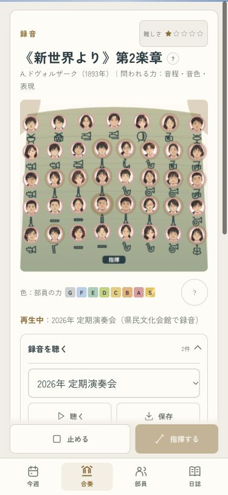
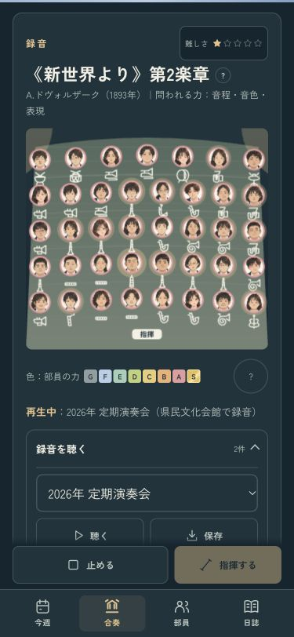

いま聴いている録音が分かる
録音を聴いていても練習中の曲名と範囲が残っていたため、実際に聴いている内容へ切り替えるようにしました。
- 曲名・難しさ・範囲が、再生中の録音にそろう。
- 止めると、元の自由曲・課題曲と練習範囲へ戻る。
- その区間で出番のない部員も、当時の席に残る。
- 卒業式から聴く場合も、保存された会場の響きを使う。
別の曲の録音で試す · 確認記録
確認例は、課題曲の「歓喜の歌」を練習中に、《新世界より》第2楽章の前半の録音を再生したところです。いつものセーブは変えません。
375px・ライト
ダーク